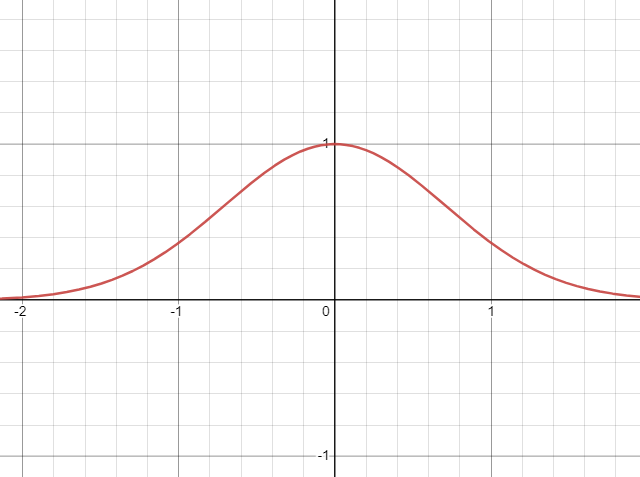

Recently, I saw this video showing a proof of the Gaussian integral, set to DNCE's Cake By The Ocean. It's pretty slick—I recommend watching with sound on. This inspired me to create a blogpost explaining what's being shown here.
We start with the Gaussian integral:
∫−∞+∞e−x2dx
It's called the Gaussian integral because it's the integral of the Gaussian function, f(x)=e−x2. This function is pretty important, and shows up in a ton of different domains like physics, statistics, and signal processing. You're probably familiar with its graph:

This function has an interesting property: while the indefinite integral of f(x) cannot be written using elementary functions, the definite integral over (−∞,∞)can be solved analytically. This is what we will be exploring today.
The video starts by equating the integral to
((∫−∞+∞e−x2dx)2)21
This allows us to rewrite the expression as an integral of two variables:
(∫−∞+∞e−x2dx∫−∞+∞e−y2dy)21
∫−∞+∞e−x2 converges, so we can treat this as a case of an integral multiplied by a constant with respect to y. Thus, we have
(∫−∞+∞(∫−∞+∞e−x2dx)e−y2dy)21
e−y2 does not vary with respect to x, so we can move it into the inner integral, yielding
(∫−∞+∞∫−∞+∞e−x2e−y2dxdy)21
or just
(∬R2e−(x2+y2)d(x,y))21
That x2+y2 tips us off that the next step will be to convert the integral to polar coordinates. To do so, we replace x and y with ρcosθ and ρsinθ, and our bounds of integration become ρ∈[0,∞) and θ∈[0,2π]